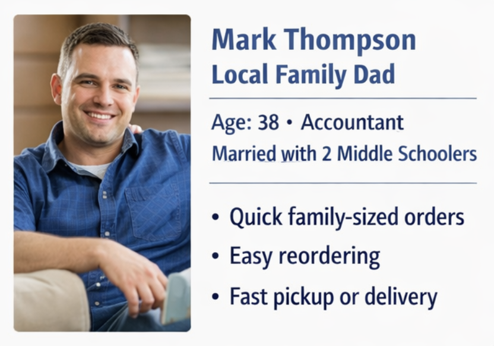
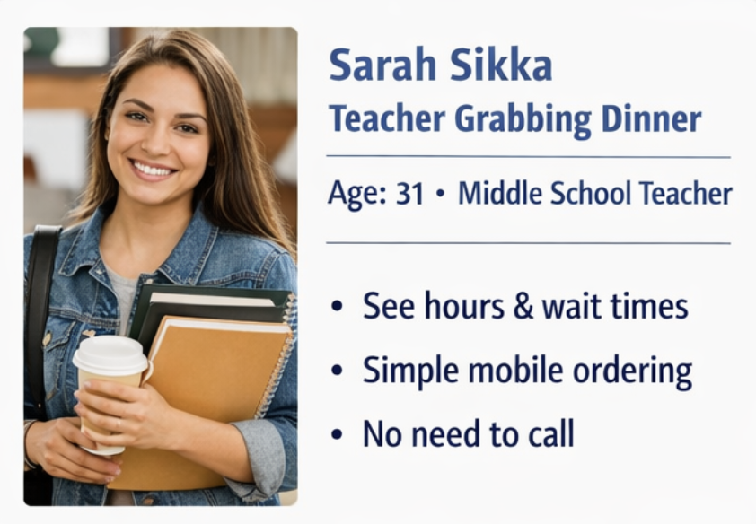
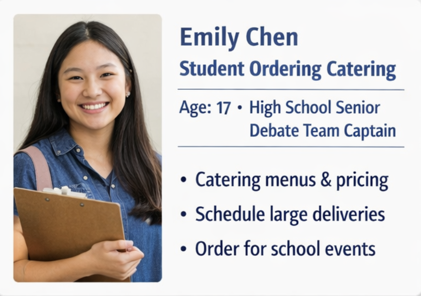
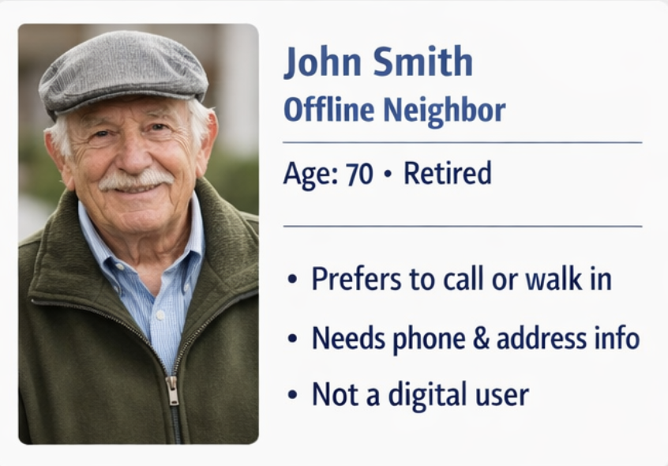
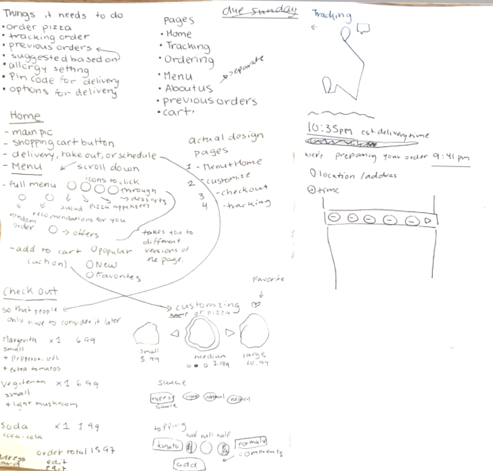
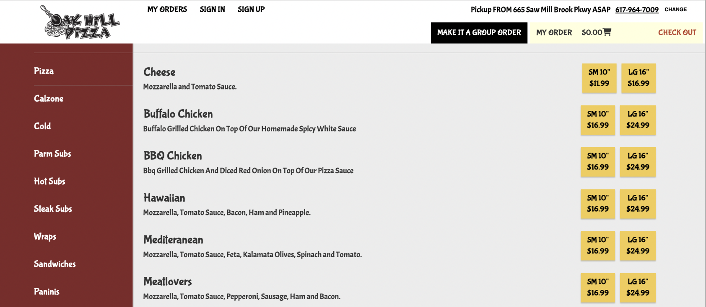

XD 370 – Web Design Work
Selected work from Bentley’s XD 370 Web Design course, where I moved from static mockups to live, responsive experiences in the browser.
Overview
XD 370 is where I learned to think about the web not just as a canvas for layouts, but as a living system of content, interactions, and constraints. Throughout the semester I designed and built responsive websites in HTML, CSS, and a bit of JavaScript – focusing on clear hierarchy, accessibility, and performance.
The course centers on best practices in user experience and interface design through hands-on responsive web and mobile app projects. We balanced business goals, audience needs, content strategy, navigation, usability, and accessibility to create experiences that are useful, usable, and desirable.
This page highlights a few of the projects I’m most proud of from the course, along with the skills I developed that now show up throughout this portfolio.
Course learning outcomes
- Design methodology – Identify communication goals, project constraints, and appropriate UX methods to respond to them.
- Real-world projects – Create client-style work that connects design decisions to business and audience needs.
- Team collaboration – Work in groups to deliver successful client projects and shared documentation.
- Complex communication – Integrate design into multi-page, multi-device experiences with clear information architecture.
- Usable visual design – Apply usability guidelines to layout, typography, and interaction so interfaces feel intuitive.
- Critical thinking & problem solving – Use research and iteration to explore options and justify design choices.
- Visualization & comps – Communicate ideas through sketches, wireframes, and high-fidelity comps that make concepts tangible.
- Type, color, and imagery – Use typography, color, and imagery intentionally to support hierarchy, brand, and accessibility.
Selected course projects
- Responsive landing page – Designed and coded a marketing page that adapts smoothly from large desktop screens down to small mobile devices, using a mobile-first approach, fluid typography, and layout systems based on CSS Grid and Flexbox.
- Multi-page site for a cause – Created an information site for a mission-driven organization, focusing on clear navigation, scannable content, and accessible color and type choices.
- Design system starter – Documented reusable tokens (color, type, spacing) and components (buttons, cards, navigation) so that future pages could stay consistent without re-deciding basic design questions.
What I practiced
Across these projects, I practiced translating design decisions into code: structuring semantic HTML, writing maintainable CSS, and debugging how designs behave across different screen sizes and devices. I also iterated based on critiques and user feedback, adjusting layout, content hierarchy, and interactions to make pages feel clearer and more usable.
The portfolio you’re currently browsing is heavily informed by this work – from the way sections are structured to how cards, grids, and typography respond at different breakpoints.
Original site: Oak Hill Pizza
For several of these assignments, I used the Oak Hill Pizza website as my source material. You can open the live site in a new tab to compare its structure and visual style with my XD 370 projects.
Project 2 – Oak Hill Pizza creative brief
For our second assignment, my teammates and I wrote a full creative brief for the Oak Hill Pizza redesign. The goal was to treat this small, family-owned pizzeria like a real client: understand their business, define who they serve, and translate that into concrete design goals for the rest of the semester.
Client & project context
Oak Hill Pizza is a locally owned shop in Newton that serves fresh pizza, calzones, salads, wraps, and catering to families, nearby workers, schools, and small businesses. Their current site is a single, scrollable page that handles online ordering, catering info, and gift cards – but it’s hard to navigate, especially on mobile, and hides key actions like “Order Online.” Our brief framed the redesign as a way to modernize their digital presence, improve the online ordering experience, and better reflect their role in the local community.
Business & website goals
- Increase online and in‑store sales by making it easy to browse the menu, place orders, and choose pickup, delivery, or catering.
- Boost customer retention and loyalty with clearer promotions and future loyalty features like rewards and personalized offers.
- Enhance brand awareness through better SEO, clearer branding, and social media integration that highlights Oak Hill as a neighborhood favorite.
- Improve customer experience via a mobile‑friendly, accessible site with readable typography, clear calls to action, and intuitive navigation.
- Stay competitive with modern conveniences like streamlined ordering, clearer delivery information, and room for features like contactless payment and tracking.
Primary audiences
- Local families who need a fast, reliable way to order dinner or food for small gatherings – prioritizing simple navigation and large orders.
- Nearby workers who want a quick lunch or dinner with minimal friction, clear pickup options, and a fast checkout.
- Schools and small businesses who place catering and bulk orders and need obvious access to catering menus and an easy way to coordinate large deliveries.
Success measures
- More completed online orders and fewer abandoned carts during checkout.
- Clearer, more positive reviews about the ordering experience and overall site usability.
- Smoother catering and bulk ordering flows for schools and businesses.
- A more consistent, recognizable brand presence across the site and social channels.
Risks, unknowns, and mitigation
- User resistance to change – loyal customers might be used to the current site. We recommended lightweight user testing and iterative changes to ease the transition.
- Client and customer preferences – without direct access to the owners or all customer segments, some pain points may be hidden. We suggested ongoing feedback collection and quick follow‑up iterations.
- Competitor moves – local competitors and national chains can also improve their sites. Part of our plan was to keep monitoring them and refine our approach over time.
Current state & competitors
We documented that Oak Hill’s one‑page design helps with continuous scrolling, and the sticky nav that updates by section is a strength, especially on mobile. But key actions and content are buried: “Order Online” is small and tucked in the top left, the main menu hides under “Catering,” and typography makes it hard to tell what’s important.
We compared Oak Hill to local peers and a major chain – Piccola Pizza, Wellesley North End Pizza, and Pizza Hut – to pull out patterns: clear menu access, strong deals and rewards, readable fonts, visible delivery info, and smooth cart flows. We also noted common weaknesses like small text, confusing third‑party menu links, or limited mobile adaptation that we wanted to avoid.
Personas & journeys
We translated our research into concrete personas that represent who we’re designing for – and one anti‑persona to remind us who the website isn’t for.




Summary & next steps
The creative brief became the backbone for the rest of my XD 370 work. It focused our redesign on clearer navigation, easier online ordering, better support for catering, and an experience that works for families, workers, and schools – not just a generic “pizza site.” The next steps in the course were to turn this strategy into responsive wireframes, a native app design, and finally a branded design system, all grounded in the goals and audiences we defined here.
Project 3 – Responsive homepage wireframes
For Project 3 I created low‑fidelity, mobile‑first wireframes of the Oak Hill Pizza homepage across phone, tablet, and desktop. Below is the mobile version in an interactive phone frame – scroll inside to see the full layout.
Homepage – phone (wireframe)
Homepage – tablet (wireframe)
Homepage – desktop (wireframe)
Catering menu – phone (wireframe)
Catering menu – tablet (wireframe)
Catering menu – desktop (wireframe)
Project 4 – Ordering flow sketches & original system
Before designing the native app for Project 4, I mapped out what the ordering experience needed to do and studied Oak Hill Pizza’s existing online ordering system. These sketches and flows show how I turned that messy, text-heavy menu into a clearer mobile ordering experience.


Project 5 – Final visual system
For the final phase of the course, I translated the Oak Hill Pizza flows into a full visual system using Burger King’s brand colors (a requirement of the assignment). The goal was to prove that the ordering experience still feels clear and usable, even when a bold fast-food palette is layered on top – and that the redesign could drive real business outcomes like repeat orders, loyalty, and stronger brand recognition.
The redesign focused on improving Oak Hill Pizza’s online and in‑store sales, boosting customer retention, enhancing brand awareness, and keeping the business competitive. To encourage repeat purchases and streamline ordering, I added user‑friendly features like customizable pizzas, the ability to save favorite orders, and a seamless checkout. These patterns reduced friction for placing and repeating orders, while favorites and a clear cart flow encouraged long‑term loyalty and made Oak Hill feel like a go‑to option rather than a one‑off choice.
I used the Burger King style guide as the foundation for the app’s visual identity to position Oak Hill Pizza alongside larger chains. The interface prioritizes simple navigation and accessibility: clear menu buttons, mobile‑optimized layouts, and obvious actions help most customers move through the app without confusion. At the same time, I adapted the guide for Oak Hill’s needs – darkening the original oranges to improve contrast, applying Burger King’s “Flame” typeface for headings, and a clean sans‑serif for body copy to balance brand alignment with readability. The result is a strong visual hierarchy where titles stand out and long‑form content remains easy to scan on any device.
Looking back, I see opportunities to push this further – especially around refining the anti‑persona to include people who might misuse the app or leave harmful reviews, and running more structured usability and accessibility tests (including with users with disabilities). A deeper competitor analysis could also surface additional ideas like loyalty programs or more AI‑assisted flows. Still, this project solidified how tying design decisions to business goals – revenue, retention, and reputation – can meaningfully shape product strategy. It reinforced my belief that thoughtful interaction design, visual systems, and accessibility work together to create experiences that feel good for customers and effective for the business.